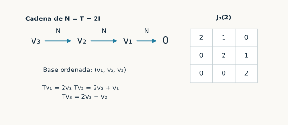
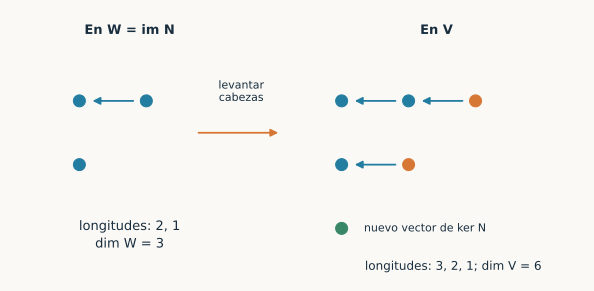
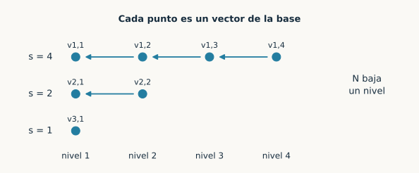
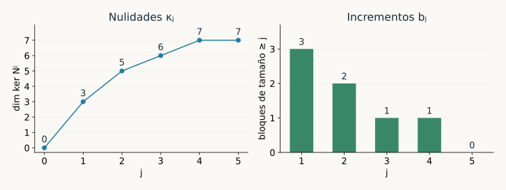
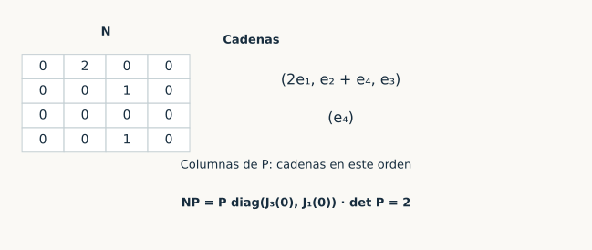
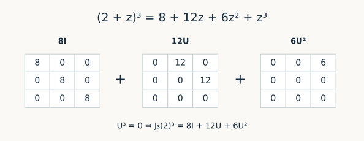

Capítulo 18. Forma de Jordan
Álgebra para matemáticos · Tomo II
← Capítulo 17 · Índice del tomo II · Obra completa · Capítulo 19 →
Para el operador \(T(x,y,z)=(2x+y,2y+z,2z)\), el único espacio propio es la recta generada por \(e_1\). Con una sola dirección propia no podemos formar una base de tres vectores. Los otros dos vectores usuales, sin embargo, tienen una relación precisa con esa recta: si restamos la parte escalar y escribimos \(N=T-2I\), obtenemos \(Ne_3=e_2\), \(Ne_2=e_1\) y \(Ne_1=0\). Cada aplicación de \(N\) baja un peldaño hasta llegar a cero.
En C17 separamos el espacio en componentes primarias. Sobre la componente correspondiente a \(\lambda\), el operador toma la forma \(\lambda I+N\), con \(N\) nilpotente. Queda por organizar esa parte nilpotente. Una base formada por cadenas como la anterior hará visible toda su acción; las longitudes de las cadenas serán la información que no depende de la base elegida.

Trabajaremos en dimensión finita sobre un cuerpo conmutativo \(\mathbb F\). La construcción nilpotente funciona sobre cualquier cuerpo; la forma de Jordan de un operador general exigirá que su característico se escinda en \(\mathbb F\). Usaremos los núcleos e imágenes de C09 y los cocientes de C11, las matrices de cambio de base de C12, los polinomios de operadores de C15 y la descomposición primaria de C17. Para el espacio cero se admiten la base vacía y la matriz sin bloques, con característico y mínimo iguales a uno.
18.1. Una filtración que cuenta la duración de las trayectorias
Sea \(N:V\to V\) nilpotente. Escribamos \(K_j=\ker N^j\) para \(j\geq0\), de modo que \(K_0=\{0\}\). Un vector de \(K_j\) desaparece después de aplicar \(N\) a lo sumo \(j\) veces. Tenemos \(K_0\subseteq K_1\subseteq K_2\subseteq\cdots\), pues \(N^jv=0\) implica \(N^{j+1}v=0\). Si \(N^r=0\), entonces \(K_r=V\).
Lema 18.1 (incrementos de los núcleos). Para \(j\geq1\), la regla \(v+K_j\mapsto Nv+K_{j-1}\) define una aplicación inyectiva de \(K_{j+1}/K_j\) en \(K_j/K_{j-1}\). En consecuencia, si \(\kappa_j=\dim K_j\), los incrementos \(\kappa_j-\kappa_{j-1}\) forman una sucesión no creciente de enteros no negativos. Si \(V\ne0\) y \(r\) es el índice de nilpotencia, las inclusiones hasta \(K_r\) son estrictas.
Demostración. Para \(v\in K_{j+1}\), se cumple \(N^j(Nv)=0\), de modo que \(Nv\in K_j\). Cambiar \(v\) por un vector de su misma clase añade un elemento de \(K_j\); su imagen por \(N\) pertenece a \(K_{j-1}\). La regla queda bien definida y es lineal. Si su salida es cero, \(Nv\in K_{j-1}\), luego \(N^jv=0\) y \(v\in K_j\). Su núcleo es cero. Comparar dimensiones de cocientes da la desigualdad entre incrementos.
Si una inclusión \(K_{j-1}\subseteq K_j\) fuera igualdad, el incremento correspondiente sería cero y todos los posteriores también. La sucesión no podría volver a crecer. Para \(j<r\) esto contradice \(K_r=V\) y \(N^{r-1}\ne0\); para \(j=r\), la igualdad contradiría directamente \(K_{r-1}\ne V\). \(\square\)
Esta restricción ya descarta datos imposibles. Las nulidades \(0,2,3,5\) no pueden ser las primeras de un nilpotente: sus incrementos serían \(2,1,2\), y el último crecimiento excedería al anterior. Cada nivel nuevo debe encontrar suficiente espacio en el nivel previo para que su imagen quede allí.
18.2. Cadenas y sus primeros vectores
Definición 18.1. Una cadena nilpotente de longitud \(s\) es una lista \((v_1,\ldots,v_s)\) con \(v_1\ne0\), \(Nv_1=0\) y \(Nv_j=v_{j-1}\) para \(2\leq j\leq s\). Llamaremos \(v_1\) su vector inferior y \(v_s\) su cabeza. Una cadena para \(T\) correspondiente a \(\lambda\) es una cadena nilpotente de \(T-\lambda I\).
Partir de una cabeza \(v\) con \(N^sv=0\) y \(N^{s-1}v\ne0\) produce la cadena \((N^{s-1}v,\ldots,Nv,v)\). Su longitud registra exactamente cuántos pasos necesita esa trayectoria para morir. Al juntar varias cadenas, la independencia de sus vectores inferiores controla todas las alturas.
Lema 18.2 (independencia de cadenas). Los vectores de una familia finita de cadenas nilpotentes son linealmente independientes si y sólo si sus vectores inferiores son linealmente independientes.
Demostración. La necesidad procede de tomar una subfamilia de una familia independiente. Para la suficiencia, consideremos una relación entre todos los vectores de las cadenas y supongamos que tiene algún coeficiente no nulo. Sea \(j\) el mayor nivel que aparece con coeficiente no nulo, numerando desde abajo. Aplicar \(N^{j-1}\) anula todos los niveles menores y convierte cada vector de nivel \(j\) en el inferior de su cadena. Obtenemos una relación entre vectores inferiores independientes. Todos sus coeficientes deben ser cero, en contradicción con la elección de \(j\). \(\square\)
En particular, una sola cadena siempre es independiente. Dos cabezas independientes, en cambio, pueden conducir al mismo vector inferior. Por ejemplo, si \(Ne_2=e_1\) y \(Ne_3=e_1\), las cabezas \(e_2,e_3\) son independientes, pero las dos cadenas comparten \(e_1\). El criterio mira lo que queda al final de cada trayectoria.
18.3. Construir una base completa de cadenas
Teorema 18.3 (base de cadenas nilpotentes). Todo operador nilpotente de un espacio de dimensión finita admite una base que es unión de cadenas nilpotentes.
Demostración. Inducimos sobre \(\dim V\). Para \(V=0\), la base vacía cumple lo pedido. Supongamos \(V\ne0\) y pongamos \(W=\operatorname{im}N\). Este subespacio es invariante bajo \(N\) y tiene dimensión menor que \(V\): si \(N\) fuera sobreyectivo sería inyectivo en dimensión finita, y ninguna potencia suya podría ser cero sobre un espacio no nulo. La restricción a \(W\) sigue siendo nilpotente.
Por inducción, \(W\) tiene una base de cadenas \((w_{i,1},\ldots,w_{i,s_i})\), con \(1\leq i\leq b\). Cada cabeza \(w_{i,s_i}\) pertenece a \(\operatorname{im}N\); elegimos \(u_i\in V\) tal que \(Nu_i=w_{i,s_i}\). Así obtenemos una cadena más larga \((w_{i,1},\ldots,w_{i,s_i},u_i)\).
Los \(b\) vectores inferiores \(w_{i,1}\) son independientes y pertenecen a \(\ker N\). Completémoslos hasta una base de ese núcleo añadiendo \(z_1,\ldots,z_c\). Cada \(z_j\) forma una cadena de longitud uno. Los vectores inferiores de las cadenas alargadas y de estas nuevas cadenas forman una base de \(\ker N\); el lema 18.2 asegura que todos los vectores reunidos son independientes.
Falta contar. La base de \(W\) aportó \(\dim W\) vectores, los levantamientos añadieron \(b\) y la ampliación del núcleo añadió \(c\), donde \(b+c=\dim\ker N\). El total es \(\operatorname{rg}N+\dim\ker N=\dim V\). La familia independiente es una base. El argumento incluye \(N=0\): en ese caso \(W=0\), no hay cadenas que alargar y toda base de \(V=\ker N\) consta de cadenas unitarias. \(\square\)

La demostración da un procedimiento efectivo: calcular una base de la imagen, representar allí la restricción, resolver el problema en dimensión menor, levantar cada cabeza mediante un sistema lineal y completar los vectores inferiores dentro del núcleo. Los levantamientos pueden elegirse libremente entre las soluciones; la independencia se conserva porque depende de los vectores inferiores, que ya estaban fijados.
18.4. La matriz de una cadena
Definición 18.2. El bloque de Jordan de tamaño \(s\geq1\) y valor \(\lambda\) es \(J_s(\lambda)=\lambda I_s+U_s\), donde \(U_s\) tiene unos en las posiciones \((i,i+1)\) y ceros en las restantes. Por ejemplo,
\[ J_4(\lambda)=\begin{pmatrix} \lambda&1&0&0\\0&\lambda&1&0\\0&0&\lambda&1\\0&0&0&\lambda \end{pmatrix}. \]
Si \((v_1,\ldots,v_s)\) es una cadena para \(T-\lambda I\), entonces \(Tv_1=\lambda v_1\) y \(Tv_j=\lambda v_j+v_{j-1}\) para \(j>1\). Escribir esas imágenes por columnas da exactamente \(J_s(\lambda)\). El subespacio generado por la cadena es invariante. En el caso nilpotente, el teorema 18.3 descompone \(V\) como suma directa de estos subespacios, con bloques \(J_s(0)\).
Definición 18.3. Una base de Jordan de \(T\) es una base que es unión de cadenas correspondientes a valores propios. Su matriz, diagonal por bloques de Jordan, se llama una forma de Jordan de \(T\). Se pueden permutar los bloques; cuando se desea fijar su presentación, se agrupan por valor propio y se ordenan sus tamaños de mayor a menor dentro de cada grupo.
Una base de Jordan contiene vectores propios y vectores que llegan a ellos después de aplicar varias veces \(T-\lambda I\). No se exige que todos sean propios. Las posiciones de los unos dependen del orden dentro de las cadenas; en este libro el vector inferior va primero.
18.5. Leer las longitudes desde los núcleos
Proposición 18.4 (nulidades y rangos). Si una base de cadenas de \(N\) tiene longitudes \(s_1,\ldots,s_b\), entonces, para todo \(j\geq0\),
\[ \kappa_j=\dim\ker N^j=\sum_{i=1}^b\min(j,s_i),\qquad \operatorname{rg}N^j=\sum_{i=1}^b\max(s_i-j,0). \]
Más precisamente, una base de \(\ker N^j\) consta de los primeros \(\min(j,s_i)\) vectores de cada cadena.
Demostración. En una cadena, \(N^jv_k\) es cero si \(k\leq j\), y es \(v_{k-j}\) si \(k>j\). Las imágenes no nulas de los vectores de la base son distintas y forman una subfamilia independiente de ella. Por tanto, una combinación queda en el núcleo exactamente cuando sus coeficientes en los lugares \(k>j\) son cero. Esto identifica una base del núcleo y cuenta sus elementos. Los vectores restantes tienen imágenes independientes y forman una base de la imagen; su número da la segunda fórmula. \(\square\)

Corolario 18.5 (recuperación y unicidad de los tamaños). El número \(b_j\) de bloques de tamaño al menos \(j\) y el número \(c_j\) de bloques de tamaño exactamente \(j\) son
\[ b_j=\kappa_j-\kappa_{j-1},\qquad c_j=b_j-b_{j+1}=2\kappa_j-\kappa_{j-1}-\kappa_{j+1}\quad(j\geq1). \]
Las nulidades determinan, por tanto, todas las longitudes con sus repeticiones. El número total de bloques es \(\kappa_1\) y, si \(V\ne0\), el mayor tamaño es el índice de nilpotencia.
Demostración. En la diferencia de las fórmulas de 18.4, una cadena aporta uno si \(s_i\geq j\) y cero si \(s_i<j\). Esto prueba la fórmula de \(b_j\). Restar las cantidades de cadenas que alcanzan los niveles \(j\) y \(j+1\) cuenta las que terminan en el primero. Los bloques son tantos como sus vectores inferiores, que forman una base del núcleo. Finalmente, \(N^j\) es cero precisamente cuando \(j\) alcanza todas las longitudes. \(\square\)
Para las longitudes \(4,2,1\), las nulidades son \(0,3,5,6,7,7,\ldots\). Sus incrementos son \(3,2,1,1,0,\ldots\). Hay tres bloques, dos llegan al segundo nivel, uno llega al tercero y ese mismo llega al cuarto. Las diferencias sucesivas dan un bloque de tamaño uno, uno de tamaño dos, ninguno de tamaño tres y uno de tamaño cuatro. La repetición de la nulidad final permite calcular también \(c_4\) sin inventar un crecimiento posterior.

Las bases construidas en 18.3 pueden variar. Los tamaños que producen no varían, porque las dimensiones de los núcleos pertenecen al operador. Ésta es la primera parte de la canonicidad de Jordan.
18.6. Separar valores propios y reunir las cadenas
Teorema 18.6 (existencia de la forma de Jordan). Un operador de dimensión finita admite una forma de Jordan sobre \(\mathbb F\) si y sólo si su polinomio característico se escinde sobre \(\mathbb F\).
Demostración. Si existe una forma de Jordan, su matriz es triangular y su característico es el producto de sus factores diagonales \(t-\lambda\), de modo que se escinde.
Supongamos ahora que el característico se escinde. C17, corolario 17.11, proporciona la suma directa \(V=\bigoplus_\lambda G_\lambda\), donde \(G_\lambda=\ker(T-\lambda I)^{r_\lambda}\) y \(r_\lambda\) es el exponente de \(t-\lambda\) en el mínimo. Sobre \(G_\lambda\), el operador \(N_\lambda=(T-\lambda I)|_{G_\lambda}\) es nilpotente. Por 18.3 elegimos una base de cadenas de cada \(N_\lambda\). La suma directa garantiza que reunir todas esas bases da una base de \(V\). La acción de \(T\) sobre cada cadena tiene matriz \(J_s(\lambda)\), como se comprobó por columnas en 18.4. La matriz total es diagonal por esos bloques. Para el espacio cero la afirmación se cumple con los convenios iniciales. \(\square\)
Sobre \(\mathbb C\) la existencia se sigue del teorema fundamental del álgebra, conservando el estatuto de resultado externo admitido en T1, §26.15. Sobre \(\mathbb R\) puede fallar: la rotación de matriz \(\begin{pmatrix}0&-1\\1&0\end{pmatrix}\) tiene característico \(t^2+1\), que no se escinde allí. Al extender los escalares a \(\mathbb C\), esa misma matriz sí tiene forma de Jordan, en este caso diagonal.
Proposición 18.7 (datos de cada valor propio). Supongamos que el característico se escinde y fijemos un valor propio \(\lambda\). Si sus tamaños de bloque son \(s_{\lambda,1},\ldots,s_{\lambda,b_\lambda}\), entonces
\[ \dim\ker(T-\lambda I)^j=\sum_{i=1}^{b_\lambda}\min(j,s_{\lambda,i}),\qquad a_\lambda=\sum_i s_{\lambda,i},\qquad g_\lambda=b_\lambda,\qquad r_\lambda=\max_i s_{\lambda,i}. \]
Aquí \(a_\lambda\) y \(g_\lambda\) son las multiplicidades algebraica y geométrica, y \(r_\lambda\) es el exponente de \(t-\lambda\) en el mínimo. Las diferencias de nulidades de 18.5 recuperan todos los bloques de \(\lambda\), calculando los núcleos en el espacio completo.
Demostración. En \(G_\lambda\) se aplica 18.4. En una componente \(G_\mu\) con \(\mu\ne\lambda\), la restricción de \(T-\lambda I\) es \((\mu-\lambda)I+N_\mu\). Es invertible: al factorizar el escalar no nulo, su inversa es una suma geométrica finita de potencias de \(-N_\mu/(\mu-\lambda)\). Todas sus potencias tienen núcleo cero. Por ello el núcleo total recibe contribución sólo de \(G_\lambda\) y se obtiene la primera fórmula.
El característico de un bloque es \((t-\lambda)^s\), por triangularidad, y el producto de los característicos de los bloques da \(a_\lambda=\sum_i s_{\lambda,i}\). Para \(j=1\), cada bloque correspondiente aporta una dimensión al espacio propio y obtenemos \(g_\lambda=b_\lambda\). Por C17, el índice de nilpotencia de \(N_\lambda\) es \(r_\lambda\); el corolario 18.5 lo identifica con la mayor longitud. \(\square\)
Así se leen las dos expresiones polinómicas desde los bloques:
\[ \chi_T(t)=\prod_\lambda(t-\lambda)^{\sum_i s_{\lambda,i}},\qquad m_T(t)=\prod_\lambda(t-\lambda)^{\max_i s_{\lambda,i}}. \]
La diagonalización corresponde a que todos los tamaños sean uno. Tener un único bloque para un valor propio significa que su multiplicidad geométrica es uno, aunque la algebraica pueda ser grande.
Corolario 18.8 (clasificación por semejanza en el caso escindido). Dos matrices del mismo orden cuyos característicos se escinden son semejantes si y sólo si tienen los mismos valores propios y los mismos tamaños de bloque, con sus repeticiones. Equivalentemente, tienen los mismos valores propios y las mismas nulidades de \((A-\lambda I)^j\) para todo \(\lambda\) propio y \(1\leq j\leq n\).
Demostración. Si \(B=P^{-1}AP\), entonces \((B-\lambda I)^j=P^{-1}(A-\lambda I)^jP\), de modo que \(P\) lleva un núcleo sobre el otro y sus dimensiones coinciden. Las nulidades determinan los tamaños por 18.5 y 18.7. En la otra dirección, ordenar de igual manera bloques coincidentes produce una matriz \(J\) común; si \(A=PJP^{-1}\) y \(B=QJQ^{-1}\), se obtiene \(B=(PQ^{-1})^{-1}A(PQ^{-1})\). Hasta \(j=n\) basta: ningún bloque puede superar la dimensión, y después las nulidades permanecen constantes. \(\square\)
Los datos \(\chi_T\), \(m_T\) y las multiplicidades geométricas juntos todavía pueden ser insuficientes. Las particiones nilpotentes \((3,3,1)\) y \((3,2,2)\) tienen dimensión siete, tres bloques e índice tres. Ambas dan \(\chi=t^7\) y \(m=t^3\), pero sus nulidades segundas son cinco y seis. Por 18.8 representan clases de semejanza distintas.
18.7. De los tamaños a una base verificable
Consideremos sobre \(\mathbb Q\) la matriz
\[ N=\begin{pmatrix}0&2&0&0\\0&0&1&0\\0&0&0&0\\0&0&1&0\end{pmatrix}. \]
Se tiene \(Ne_2=2e_1\), \(Ne_3=e_2+e_4\) y \(Ne_1=Ne_4=0\). Por tanto \(N^2e_3=2e_1\) y \(N^3=0\). Los rangos de \(N,N^2,N^3\) son \(2,1,0\), así que las nulidades son \(2,3,4\). Los incrementos \(2,1,1\) anuncian dos bloques, de tamaños tres y uno.
Tomamos la cabeza \(e_3\). Su cadena ordenada es \((2e_1,e_2+e_4,e_3)\). El vector \(e_4\) pertenece al núcleo y es independiente del inferior \(2e_1\); aporta la cadena unitaria restante. Con estas columnas,
\[ P=\begin{pmatrix}2&0&0&0\\0&1&0&0\\0&0&1&0\\0&1&0&1\end{pmatrix},\qquad J=\begin{pmatrix}0&1&0&0\\0&0&1&0\\0&0&0&0\\0&0&0&0\end{pmatrix}. \]
La igualdad \(NP=PJ\) expresa, columna por columna, las dos cadenas. Además \(\det P=2\ne0\), de modo que \(P^{-1}NP=J\). Verificar esa identidad y la invertibilidad de \(P\) evita que una lista de tamaños correcta oculte una base mal elegida.

Hay otra construcción útil cuando ya se han calculado todos los núcleos. A una cabeza de longitud \(j\) podemos añadir elementos de \(K_{j-1}\) sin modificar su vector inferior, y las imágenes por \(N\) de cabezas más largas ya suministran parte de \(K_j\). El cociente siguiente separa esas dos redundancias.
Proposición 18.9 (elección compatible de cabezas). Sea \(N\) nilpotente en \(V\ne0\), de índice \(r\). Para \(1\leq j\leq r\), pongamos
\[ H_j=K_j/(K_{j-1}+NK_{j+1}),\qquad K_{r+1}=V. \]
Se tiene \(\dim H_j=c_j\), el número de bloques de tamaño exactamente \(j\). Eligiendo representantes en \(K_j\) de una base de cada \(H_j\), y formando con cada representante una cadena de longitud \(j\), se obtiene una base de Jordan de \(N\).
Demostración. El denominador está contenido en \(K_j\), pues \(N^{j+1}v=0\) implica \(N^j(Nv)=0\). Definamos \(B_j=\ker N\cap\operatorname{im}N^{j-1}\). La aplicación \(K_j\to B_j\), \(v\mapsto N^{j-1}v\), es sobreyectiva: si \(b=N^{j-1}v\) y \(Nb=0\), entonces \(v\in K_j\). Su núcleo es \(K_{j-1}\). Además, lleva \(NK_{j+1}\) sobre \(B_{j+1}\): sus imágenes son \(N^ju\) para \(u\in K_{j+1}\), y éstos son exactamente los elementos de \(\ker N\cap\operatorname{im}N^j\). Resulta un isomorfismo
\[ H_j\longrightarrow B_j/B_{j+1},\qquad v+(K_{j-1}+NK_{j+1})\longmapsto N^{j-1}v+B_{j+1}. \]
En una base de cadenas existente por 18.3, \(B_j\) está generado por los vectores inferiores de las cadenas de longitud al menos \(j\). Así \(\dim B_j=b_j\) y \(\dim H_j=b_j-b_{j+1}=c_j\).
Elijamos los representantes del enunciado. Sus imágenes \(N^{j-1}v\) representan una base de \(B_j/B_{j+1}\). En la filtración descendente \(B_1\supseteq B_2\supseteq\cdots\supseteq B_{r+1}=0\), levantar bases de los cocientes sucesivos produce una base de \(B_1\): empezando por el último cociente, cada paso añade vectores independientes módulo el subespacio ya generado y completa el siguiente espacio. Por tanto, todos los vectores inferiores elegidos forman una base de \(\ker N\).
Cada cabeza tiene longitud exactamente \(j\), pues su clase no nula impide que esté en \(K_{j-1}\). El lema 18.2 asegura la independencia de todas las cadenas. Aportan \(\sum_j jc_j=\dim V\) vectores, porque los \(c_j\) ya cuentan los tamaños de una base de cadenas existente. La familia es una base. \(\square\)
Esta elección exige bases de cocientes, que se calculan extendiendo primero una base de \(K_{j-1}+NK_{j+1}\) a una de \(K_j\). No basta tomar cualquier vector que aparezca al ampliar una base de un núcleo: podría ser un tramo de una cadena más larga y repetir una dirección inferior ya utilizada.
Volvamos también al ejemplo de C17,
\[ A=\begin{pmatrix}2&1&1&0\\0&2&1&0\\0&0&-1&1\\0&0&0&-1\end{pmatrix}. \]
Sus componentes primarias son \(G_2=\operatorname{span}(e_1,e_2)\) y \(G_{-1}=\operatorname{span}(u,v)\), donde
\[ u=(-2/9,-1/3,1,0),\qquad v=(-1/27,-1/9,0,1). \]
Las relaciones \((A-2I)e_1=0\), \((A-2I)e_2=e_1\), \((A+I)u=0\) y \((A+I)v=u\) dan dos cadenas. Si \(P=(e_1\ e_2\ u\ v)\), entonces \(\det P=1\) y \(AP=P\operatorname{diag}(J_2(2),J_2(-1))\). La base primaria anterior queda ahora organizada internamente: cada componente tiene una sola cadena de longitud dos.
18.8. Calcular con un bloque
Proposición 18.10 (evaluación polinómica). Escribamos la identidad formal \(p(\lambda+z)=\sum_{j\geq0}a_jz^j\) en \(\mathbb F[z]\). Entonces
\[ p(J_s(\lambda))=\sum_{j=0}^{s-1}a_jU_s^j. \]
Demostración. La identidad es un cambio de variable entre polinomios. Evaluarla en \(U_s\) sustituye \(\lambda+z\) por \(\lambda I+U_s=J_s(\lambda)\). Los términos de grado al menos \(s\) desaparecen porque \(U_s^s=0\). La evaluación respeta sumas y productos por C15, así que no se necesita una expansión analítica. \(\square\)
La fórmula conserva sentido en característica positiva sin dividir por factoriales. Cada potencia \(U_s^j\) tiene unos en la \(j\)-ésima diagonal superior. Por eso el coeficiente \(a_j\) ocupa esa diagonal de \(p(J_s(\lambda))\). Para \(s=3\), \(\lambda=2\) y \(p(t)=t^3\), la expansión \((2+z)^3=8+12z+6z^2+z^3\) da
\[ J_3(2)^3=8I+12U_3+6U_3^2 =\begin{pmatrix}8&12&6\\0&8&12\\0&0&8\end{pmatrix}. \]

Corolario 18.11 (potencias e inversa). Para \(k\geq0\),
\[ J_s(\lambda)^k=\sum_{j=0}^{\min(k,s-1)}\binom{k}{j}\lambda^{k-j}U_s^j. \]
Si \(\lambda\ne0\), el bloque es invertible y
\[ J_s(\lambda)^{-1}=\lambda^{-1}\sum_{j=0}^{s-1}(-\lambda^{-1}U_s)^j. \]
Los coeficientes binomiales se interpretan en \(\mathbb F\); en los exponentes cero se usa \(\lambda^0=1\), también para \(\lambda=0\).
Demostración. La primera identidad resulta de 18.10 y el binomio para \((\lambda+z)^k\). Para la segunda, pongamos \(X=-\lambda^{-1}U_s\). Al multiplicar \(I-X\) por \(I+X+\cdots+X^{s-1}\) queda \(I-X^s=I\). Como \(X^s=0\) y \(J_s(\lambda)=\lambda(I-X)\), obtenemos la inversa anunciada. Si \(\lambda=0\), el bloque es nilpotente en dimensión positiva y no es invertible. \(\square\)
Si \(A=PJP^{-1}\), calcular \(A^k\) se reduce a calcular cada bloque de \(J^k\) y volver mediante \(PJ^kP^{-1}\). La matriz \(P\) conserva su importancia: los bloques describen la acción en una base adaptada; para recuperar coordenadas originales hay que realizar el cambio de base.
18.9. Ejercicios y soluciones
Los ejercicios siguen la construcción desde las trayectorias hasta la clasificación y el cálculo. Se mantienen los convenios de orden de cadenas y de escisión del capítulo; cuando cambie el cuerpo se indicará expresamente.
Ejercicio 18.1. Para \(N(x,y,z)=(y,z,0)\), encuentre una cadena que sea base y calcule \(K_1,K_2,K_3\).
Solución 1. Se tiene \(Ne_3=e_2\), \(Ne_2=e_1\) y \(Ne_1=0\), de modo que \((e_1,e_2,e_3)\) es una cadena y una base. Resolver \(N(x,y,z)=0\) exige \(y=z=0\); por tanto \(K_1=\operatorname{span}e_1\). Como \(N^2(x,y,z)=(z,0,0)\), resulta \(K_2=\operatorname{span}(e_1,e_2)\). Finalmente \(N^3=0\) y \(K_3=\mathbb F^3\). Las nulidades \(1,2,3\) corresponden a un único bloque de tamaño tres.
Ejercicio 18.2. Si \(N^4v=0\) y \(N^3v\ne0\), demuestre directamente que \(v,Nv,N^2v,N^3v\) son independientes.
Solución 2. En una relación \(a_0v+a_1Nv+a_2N^2v+a_3N^3v=0\), aplicar \(N^3\) da \(a_0N^3v=0\), luego \(a_0=0\). Aplicar ahora \(N^2\) a la relación restante da \(a_1=0\); aplicar \(N\) da \(a_2=0\), y queda \(a_3N^3v=0\), luego \(a_3=0\). Ordenados en sentido inverso, estos cuatro vectores forman una cadena de longitud cuatro.
Ejercicio 18.3. Calcule las nulidades de todas las potencias de \(J_4(0)\oplus J_2(0)\oplus J_1(0)\).
Solución 3. Cada bloque de tamaño \(s\) aporta \(\min(j,s)\) a la nulidad de la potencia \(j\). Para \(j=0,1,2,3,4\) se obtienen respectivamente \(0,3,5,6,7\). Desde \(j=4\) la nulidad es siete, porque los tres bloques ya se anulan. Los rangos correspondientes son \(7,4,2,1,0\), y después cero.
Ejercicio 18.4. Un nilpotente de dimensión nueve tiene nulidades \(0,3,5,7,8,9,9,\ldots\). Determine sus bloques.
Solución 4. Los incrementos son \(3,2,2,1,1,0\). Sus diferencias dan \(c_1=1\), \(c_2=0\), \(c_3=1\), \(c_4=0\) y \(c_5=1\). Los tamaños son, por tanto, \(5,3,1\). Suman nueve; el número de bloques es tres y el mayor tamaño cinco, de acuerdo con la primera nulidad y el índice de estabilización.
Ejercicio 18.5. ¿Puede un nilpotente de dimensión seis tener nulidades \(0,2,3,5,6\)?
Solución 5. No. Los incrementos serían \(2,1,2,1\). Por 18.1 deben ser no crecientes, pero el tercero aumenta de uno a dos. También la fórmula de bloques exactos daría \(c_2=2\cdot3-2-5=-1\), imposible para un número de bloques. No existe tal operador.
Ejercicio 18.6. Un nilpotente de dimensión ocho tiene rango seis y \(N^4=0\). Determine sus posibles formas de Jordan.
Solución 6. La nulidad de \(N\) es dos, así que hay dos bloques. Sus tamaños suman ocho y ninguno supera cuatro. La única posibilidad es \(4+4\). Por ello la forma es \(J_4(0)\oplus J_4(0)\). En particular, las hipótesis fuerzan índice exactamente cuatro y nulidades \(2,4,6,8\).
Ejercicio 18.7. En dimensión siete, suponga \(N^2=0\) y \(\operatorname{rg}N=3\). Encuentre los bloques.
Solución 7. Los bloques tienen tamaños uno o dos. Cada bloque de tamaño dos contribuye uno al rango de \(N\), por lo que hay tres de ellos. Ocupan seis dimensiones y queda un bloque unitario. La forma es \(J_2(0)^{\oplus3}\oplus J_1(0)\) y el núcleo tiene dimensión cuatro, como exige rango–nulidad.
Ejercicio 18.8. Para \(J_3(5)\oplus J_2(5)\oplus J_2(-1)\) sobre \(\mathbb Q\), calcule \(\chi\), \(m\) y las multiplicidades geométricas.
Solución 8. Los bloques de valor cinco ocupan cinco dimensiones y los de valor menos uno, dos. Así \(\chi=(t-5)^5(t+1)^2\). Los mayores tamaños son tres y dos, luego \(m=(t-5)^3(t+1)^2\). Hay dos bloques de valor cinco y uno de valor menos uno, de modo que \(g_5=2\) y \(g_{-1}=1\).
Ejercicio 18.9. En el ejercicio anterior, calcule \(\dim\ker(A-5I)^j\) para \(j=1,2,3\) y explique qué ocurre en el bloque de valor \(-1\).
Solución 9. Los dos bloques de cinco aportan \(\min(j,3)+\min(j,2)\), por lo que las nulidades son \(2,4,5\). En el bloque de menos uno, \(A-5I=-6I+U_2\) es invertible: su determinante es \(36\ne0\). Ninguna potencia suya aporta un vector no nulo al núcleo. Desde la tercera potencia la nulidad total permanece en cinco, sin llegar a siete.
Ejercicio 18.10. Pruebe que un operador nilpotente y diagonalizable es cero.
Solución 10. En una base propia, cada valor propio \(\lambda\) cumple \(\lambda^r=0\) porque \(N^r=0\). En un cuerpo esto obliga a \(\lambda=0\). Su matriz diagonal es entonces cero y el operador también. En términos de Jordan, la diagonalización exige bloques unitarios y la nilpotencia exige que todos sus valores sean cero.
Ejercicio 18.11. Para la matriz nilpotente de orden cuatro de §18.7, escriba \(NP\) y \(PJ\) y compruebe el cambio de base.
Solución 11. Las columnas de \(P\) son \(2e_1,e_2+e_4,e_3,e_4\). Aplicar \(N\) da \(0,2e_1,e_2+e_4,0\). Multiplicar \(P\) por \(J=J_3(0)\oplus J_1(0)\) produce esas mismas cuatro columnas, por la posición de los unos de \(J\). Ambas matrices son
\[ \begin{pmatrix}0&2&0&0\\0&0&1&0\\0&0&0&0\\0&0&1&0\end{pmatrix}. \]
Como \(\det P=2\ne0\) sobre \(\mathbb Q\), la igualdad prueba \(P^{-1}NP=J\).
Ejercicio 18.12. Reduzca la matriz \(N\) de §18.7 al cuerpo \(\mathbb F_2\). Determine de nuevo los bloques.
Solución 12. Sobre \(\mathbb F_2\) se tiene \(Ne_2=0\) y \(Ne_3=e_2+e_4\), mientras \(Ne_1=Ne_4=0\). La imagen es la recta generada por \(e_2+e_4\), y \(N^2=0\). Las nulidades son tres y cuatro, con incrementos \(3,1,0\). Hay un bloque de tamaño dos y dos de tamaño uno. Una base de cadenas es \((e_2+e_4,e_3,e_1,e_4)\): los inferiores \(e_2+e_4,e_1,e_4\) son independientes en el núcleo. La antigua matriz \(P\) tiene determinante cero en este cuerpo y ya no sirve.
Ejercicio 18.13. Dé dos cabezas independientes cuyas cadenas no sean conjuntamente independientes.
Solución 13. En \(\mathbb F^3\), defina \(Ne_2=Ne_3=e_1\) y \(Ne_1=0\). Las cabezas \(e_2,e_3\) son independientes, pero las cadenas \((e_1,e_2)\) y \((e_1,e_3)\) repiten el mismo vector inferior. La relación entre las dos copias de \(e_1\) muestra dependencia. Para obtener una base de cadenas se puede usar \((e_1,e_2)\) y la cadena unitaria \((e_3-e_2)\), pues \(N(e_3-e_2)=0\).
Ejercicio 18.14. ¿Determinan el característico y el mínimo la clase de semejanza de un nilpotente? Construya un contraejemplo de dimensión seis.
Solución 14. Las particiones \((3,3)\) y \((3,2,1)\) dan operadores de dimensión seis, característico \(t^6\) y mínimo \(t^3\). Sus nulidades primeras son dos y tres, respectivamente, porque tienen distinto número de bloques. Por ello no son semejantes. Los dos polinomios indican dimensión y mayor tamaño, pero no distribuyen todas las dimensiones entre bloques.
Ejercicio 18.15. Compare las particiones \((3,3,1)\) y \((3,2,2)\) usando también la multiplicidad geométrica.
Solución 15. Ambas tienen tres bloques, suma siete y tamaño máximo tres: coinciden \(\chi=t^7\), \(m=t^3\) y \(g_0=3\). En la segunda potencia, la primera partición da \(2+2+1=5\) y la segunda \(2+2+2=6\). Las nulidades diferentes impiden la semejanza por 18.8. Incluso añadir la multiplicidad geométrica a ambos polinomios deja información sin determinar.
Ejercicio 18.16. Clasifique los nilpotentes de dimensión cuatro, indicando sus sucesiones de nulidades positivas hasta estabilizar.
Solución 16. Las particiones de cuatro son \((4)\), \((3,1)\), \((2,2)\), \((2,1,1)\) y \((1,1,1,1)\). Producen, respectivamente, las sucesiones \((1,2,3,4)\), \((2,3,4)\), \((2,4)\), \((3,4)\) y \((4)\). Cada partición existe tomando la suma de los bloques correspondientes; la unicidad de 18.5 asegura que son cinco clases distintas y que no falta ninguna.
Ejercicio 18.17. Demuestre que un nilpotente de dimensión \(n>0\) tiene un solo bloque si y sólo si \(\dim\ker N=1\).
Solución 17. El número de bloques es exactamente la nulidad primera, por 18.5. Si ésta es uno, hay un solo bloque y su tamaño debe ser \(n\). Recíprocamente, \(J_n(0)\) tiene núcleo generado por su primer vector. En ese caso una cabeza de longitud \(n\) es un vector cíclico y la lista de sus potencias genera todo el espacio.
Ejercicio 18.18. Si dos matrices tienen las mismas nulidades de todas sus potencias, ¿deben ser semejantes? Considere matrices invertibles.
Solución 18. No en general. Sobre \(\mathbb Q\), \(I_2\) y \(2I_2\) son invertibles, así que todas las potencias de ambas tienen nulidad cero. Sin embargo, sus característicos son \((t-1)^2\) y \((t-2)^2\), por lo que no son semejantes. El criterio del capítulo compara las potencias desplazadas por cada valor propio, además de los valores propios mismos. Para nilpotentes sí bastan las potencias sin desplazar.
Ejercicio 18.19. Pruebe que \(\operatorname{rg}N^{j-1}-\operatorname{rg}N^j\) cuenta los bloques de tamaño al menos \(j\).
Solución 19. Por rango–nulidad, la diferencia es \((n-\kappa_{j-1})-(n-\kappa_j)=\kappa_j-\kappa_{j-1}\). El corolario 18.5 identifica este número con \(b_j\). También puede verse en cada bloque: su rango disminuye en uno mientras el exponente no ha superado su tamaño, y después permanece en cero.
Ejercicio 18.20. En dimensión diez se sabe que los rangos de \(N,N^2,N^3,N^4\) son \(6,3,1,0\). Halle los tamaños.
Solución 20. Las nulidades, incluyendo \(\kappa_0\), son \(0,4,7,9,10\), y después diez. Los incrementos son \(4,3,2,1,0\). Sus diferencias son uno en los tamaños uno, dos, tres y cuatro. La partición es \((4,3,2,1)\), cuya suma es diez; sustituirla en la fórmula de rango devuelve \(6,3,1,0\).
Ejercicio 18.21. Para \(N=J_3(0)\oplus J_1(0)\), calcule los espacios \(H_j\) de 18.9 usando la base de cadenas \((v_1,v_2,v_3,z)\).
Solución 21. Tenemos \(K_1=\operatorname{span}(v_1,z)\), \(K_2=\operatorname{span}(v_1,v_2,z)\) y \(K_3=K_4=V\). Para \(j=1\), \(NK_2=\operatorname{span}v_1\), así que \(H_1\) tiene base la clase de \(z\). Para \(j=2\), \(K_1+NK_3=\operatorname{span}(v_1,z,v_2)=K_2\), de modo que \(H_2=0\). Para \(j=3\), \(K_2+NK_4=K_2\) y la clase de \(v_3\) es base de \(H_3\). Las dimensiones \(1,0,1\) cuentan exactamente los bloques.
Ejercicio 18.22. En el ejercicio anterior, reemplace la cabeza \(v_3\) por \(v_3+av_2+bz\) y el vector unitario \(z\) por \(z+cv_1\). ¿Se obtiene una base de cadenas para cualesquiera \(a,b,c\in\mathbb F\)?
Solución 22. Sí. La cabeza nueva tiene imágenes \(v_2+av_1\) y \(v_1\), por lo que genera la cadena \((v_1,v_2+av_1,v_3+av_2+bz)\). El vector \(z+cv_1\) sigue en el núcleo. Los inferiores \(v_1,z+cv_1\) son independientes: en una relación, el coeficiente de \(z\) fuerza el segundo coeficiente a cero y luego el primero a cero. El lema 18.2 da independencia de los cuatro vectores y, por dimensión, forman una base.
Ejercicio 18.23. ¿Por qué tomar una base de \(K_2/K_1\) y convertir cada representante en cabeza de longitud dos puede impedir completar una base de Jordan?
Solución 23. En un bloque \(J_3(0)\) con cadena \((v_1,v_2,v_3)\), la clase de \(v_2\) es base de \(K_2/K_1\). Produce la cadena \((v_1,v_2)\). Pero para incluir la dirección de \(v_3\) hay que usar una cadena de longitud tres, cuyo inferior vuelve a ser un múltiplo de \(v_1\); las dos cadenas juntas son dependientes. El cociente correcto para cabezas de longitud exactamente dos es \(K_2/(K_1+NK_3)=0\), que excluye ese tramo de la cadena más larga.
Ejercicio 18.24. Justifique la igualdad \(\sum_{j\geq1}j c_j=\sum_{j\geq1}b_j=\dim V\).
Solución 24. Cada bloque de longitud \(s\) aporta uno a \(b_1,\ldots,b_s\), y cero a los restantes; por tanto su aporte total es \(s\). Sumando por bloques resulta \(\sum_jb_j=\dim V\). Como \(c_j=b_j-b_{j+1}\) y todas las sucesiones terminan en cero, la suma finita \(\sum_jj(b_j-b_{j+1})\) se telescopa a \(\sum_jb_j\). No hay cuestión de convergencia: sólo hay finitos términos no nulos.
Ejercicio 18.25. Si una sucesión entera empieza en cero, llega a \(n\) y permanece allí, y sus incrementos son no negativos y no crecientes, construya un nilpotente de dimensión \(n\) con esas nulidades.
Solución 25. Denote por \(b_j\) los incrementos y ponga \(c_j=b_j-b_{j+1}\). Son enteros no negativos y terminan en cero. Tome \(c_j\) bloques \(J_j(0)\) para cada \(j\). El telescopado del ejercicio 24 da dimensión \(\sum_jjc_j=\sum_jb_j=n\). Por 18.5, los incrementos de las nulidades de esta matriz son exactamente los \(b_j\) elegidos; al partir ambas sucesiones de cero, coinciden término a término. Si \(n=0\), se usa la matriz vacía.
Ejercicio 18.26. Si \(N\) tiene bloques de longitudes \(s_i\), determine \(\dim(\ker N\cap\operatorname{im}N^k)\) para \(k\geq0\).
Solución 26. En una cadena de longitud \(s\), la imagen de \(N^k\) está generada por los primeros \(\max(s-k,0)\) vectores. Su intersección con el núcleo contiene el vector inferior exactamente cuando \(s\geq k+1\). Las componentes de cadenas forman una suma directa, así que la dimensión buscada es el número de bloques de tamaño al menos \(k+1\), esto es \(b_{k+1}=\kappa_{k+1}-\kappa_k\).
Ejercicio 18.27. Compruebe las cadenas de valores \(2\) y \(-1\) del ejemplo mixto de §18.7 calculando \(Au\) y \(Av\).
Solución 27. Para \(u=(-2/9,-1/3,1,0)\) se obtiene \(Au=(2/9,1/3,-1,0)=-u\). Para \(v=(-1/27,-1/9,0,1)\) se obtiene \(Av=(-5/27,-2/9,1,-1)=u-v\). Junto con \(Ae_1=2e_1\) y \(Ae_2=e_1+2e_2\), esto prueba las cuatro columnas de \(AP=P\operatorname{diag}(J_2(2),J_2(-1))\). La matriz \(P=(e_1\ e_2\ u\ v)\) es triangular superior con diagonal uno; es invertible.
Ejercicio 18.28. Sobre \(\mathbb R\), encuentre una base de Jordan para \(A=\begin{pmatrix}3&2\\0&3\end{pmatrix}\).
Solución 28. Para \(N=A-3I\), se cumple \(Ne_2=2e_1\) y \(Ne_1=0\). La cadena \((2e_1,e_2)\) es una base. Así \(P=\operatorname{diag}(2,1)\) tiene determinante dos y \(P^{-1}AP=J_2(3)\). La normalización de la cadena convierte el coeficiente dos del acoplamiento en el uno del bloque.
Ejercicio 18.29. Explique por qué la rotación real de §18.6 no tiene forma de Jordan real y encuentre una forma compleja con su base.
Solución 29. El característico es \(t^2+1\), sin raíces reales; 18.6 impide una forma real. Sobre \(\mathbb C\), los vectores \(v=(1,-i)\) y \(w=(1,i)\) satisfacen \(Av=iv\) y \(Aw=-iw\). La matriz \(P=(v\ w)\) tiene determinante \(2i\ne0\). Por ello \(P^{-1}AP=\operatorname{diag}(i,-i)\), que es su forma de Jordan compleja.
Ejercicio 18.30. Calcule \(p(J_3(1))\) sobre \(\mathbb Q\) para \(p(t)=t^4-2t+3\).
Solución 30. La expansión es \(p(1+z)=2+2z+6z^2+4z^3+z^4\). Como \(U_3^3=0\), resulta
\[ p(J_3(1))=2I+2U_3+6U_3^2=\begin{pmatrix}2&2&6\\0&2&2\\0&0&2\end{pmatrix}. \]
El truncamiento elimina los términos cúbico y cuártico, sin afectar las tres diagonales presentes.
Ejercicio 18.31. En característica dos, calcule \(J_3(1)^2\) y \(J_3(1)^4\).
Solución 31. Escribiendo \(J=I+U\), el binomio y \(2=0\) dan \(J^2=I+U^2\). Esta matriz no es la identidad, porque \(U_3^2\) tiene un uno en la posición \((1,3)\). Al volver a elevar al cuadrado, \((I+U^2)^2=I+U^4=I\), pues \(U^3=0\). En particular, el orden multiplicativo del bloque es cuatro: su cuadrado aún no es uno y su cuarta potencia sí.
Ejercicio 18.32. Calcule \(J_3(2)^{-1}\) sobre \(\mathbb Q\) y verifique el producto.
Solución 32. La suma geométrica finita da \(J_3(2)^{-1}=\frac12I-\frac14U_3+\frac18U_3^2\). Multiplicar por \(2I+U_3\) produce \(I\) en la diagonal; los coeficientes de \(U_3\) son \(-1/2+1/2=0\) y los de \(U_3^2\), \(1/4-1/4=0\). El término restante es \(U_3^3/8=0\). La inversa es
\[ \begin{pmatrix}1/2&-1/4&1/8\\0&1/2&-1/4\\0&0&1/2\end{pmatrix}. \]
Ejercicio 18.33. Para el operador de la apertura, obtenga una fórmula para \(T^k(x,y,z)\) válida para todos los enteros \(k\geq0\).
Solución 33. La matriz es \(2I+U_3\). Por 18.11 su potencia es \(2^kI+k2^{k-1}U_3+\binom{k}{2}2^{k-2}U_3^2\). Sobre \(\mathbb Q\) o \(\mathbb R\) esta expresión tiene sentido también para \(k=0,1\), con sus coeficientes nulos. Como \(U_3(x,y,z)=(y,z,0)\) y \(U_3^2(x,y,z)=(z,0,0)\), se obtiene \((2^kx+k2^{k-1}y+\binom{k}{2}2^{k-2}z,\ 2^ky+k2^{k-1}z,\ 2^kz)\). Para otro cuerpo debe interpretarse la suma truncada de 18.11, que evita exponentes negativos innecesarios.
Ejercicio 18.34. Si \(p(t)=(t-\lambda)^hq(t)\) con \(h\geq0\) y \(q(\lambda)\ne0\), calcule la nulidad de \(p(J_s(\lambda))\).
Solución 34. Se tiene \(p(J)=U_s^h q(\lambda I+U_s)\). La segunda matriz es \(q(\lambda)I\) más un polinomio en \(U_s\) sin término constante. Esa parte es nilpotente, así que la matriz es invertible por la suma geométrica finita. Además conmuta con \(U_s^h\). Por ello el producto tiene el mismo rango y la misma nulidad que \(U_s^h\), cuya nulidad es \(\min(h,s)\). El argumento incluye \(h=0\) y \(h\geq s\).
Ejercicio 18.35. Caracterice los polinomios \(p\) que anulan una matriz de Jordan, deduciendo de nuevo la fórmula del mínimo.
Solución 35. En un bloque de tamaño \(s\) y valor \(\lambda\), la expansión \(p(\lambda+z)=\sum a_jz^j\) da una matriz con \(a_j\) en la diagonal superior \(j\). Se anula exactamente cuando \(a_0,\ldots,a_{s-1}\) son cero, equivalencia que también puede expresarse como \((t-\lambda)^s\mid p\). Para anular todos los bloques se necesita la mayor de estas potencias para cada \(\lambda\). Como los factores de valores distintos son coprimos, el producto de esas potencias divide a \(p\), y ese mismo producto anula todos los bloques. Es el mínimo mónico.
Ejercicio 18.36. Un operador de dimensión siete satisface \(\chi=(t-2)^5(t+1)^2\) y \(m=(t-2)^3(t+1)^2\) sobre \(\mathbb Q\). Enumere sus posibles formas de Jordan y diga qué nulidad las distingue.
Solución 36. Para el valor dos, las particiones de cinco con tamaño máximo tres son \((3,2)\) y \((3,1,1)\). Para menos uno, dimensión dos y máximo dos fuerzan \((2)\). Las formas son \(J_3(2)\oplus J_2(2)\oplus J_2(-1)\) y \(J_3(2)\oplus J_1(2)\oplus J_1(2)\oplus J_2(-1)\). Se distinguen por \(\dim\ker(A-2I)\), que es dos en la primera y tres en la segunda. Esas son todas las opciones porque las particiones enumeradas agotan la dimensión primaria cinco.
Ejercicio 18.37. Demuestre que para un nilpotente de dimensión \(n>0\), las condiciones \(m_N=t^n\), existencia de un vector cíclico y un solo bloque son equivalentes.
Solución 37. Si \(m_N=t^n\), el mayor bloque tiene tamaño \(n\) y ocupa toda la dimensión; hay un solo bloque. Su cabeza genera por potencias todos los vectores de la cadena, así que es cíclica. Si \(v\) es cíclico, las potencias de \(N\) sobre \(v\) generan \(V\). Si su primera potencia nula fuera \(N^sv=0\) con \(s<n\), sólo habría a lo sumo \(s\) vectores generadores, imposible. Así \(N^{n-1}v\ne0\), el índice es al menos \(n\) y, por dimensión o por las longitudes, es exactamente \(n\). Luego \(m_N=t^n\).
Ejercicio 18.38. Pruebe que, si \(N\) tiene un solo bloque, todo operador que conmuta con \(N\) es un polinomio en \(N\).
Solución 38. Sea \(v\) una cabeza cíclica, de modo que \(v,Nv,\ldots,N^{n-1}v\) es base. Para un operador \(S\) que conmuta con \(N\), hay un único polinomio \(p\) de grado menor que \(n\) tal que \(Sv=p(N)v\), al expresar \(Sv\) en esa base. Entonces \(SN^jv=N^jSv=N^jp(N)v=p(N)N^jv\) para cada \(j\). Los dos operadores coinciden en una base y por tanto \(S=p(N)\). La recíproca también vale porque todo polinomio en \(N\) conmuta con \(N\).
Ejercicio 18.39. Considere \(A_\varepsilon=\begin{pmatrix}\lambda&1\\0&\lambda+\varepsilon\end{pmatrix}\) sobre \(\mathbb R\). Determine su forma para \(\varepsilon\ne0\) y para \(\varepsilon=0\), y calcule una base propia en el primer caso.
Solución 39. Para \(\varepsilon\ne0\) hay dos valores propios distintos. Los vectores \(e_1\) y \((1,\varepsilon)\) son propios de valores \(\lambda\) y \(\lambda+\varepsilon\), porque la segunda imagen es \((\lambda+\varepsilon)(1,\varepsilon)\). La matriz \(P_\varepsilon=\begin{pmatrix}1&1\\0&\varepsilon\end{pmatrix}\) tiene determinante \(\varepsilon\) y diagonaliza. Para \(\varepsilon=0\), la matriz ya es \(J_2(\lambda)\) y sólo tiene una dirección propia. Las dos columnas de \(P_\varepsilon\) se acercan a la misma dirección cuando \(\varepsilon\) tiende a cero; la estructura exacta de bloques cambia en el límite.
Ejercicio 18.40. Encuentre la forma de Jordan del cuadrado de un bloque \(N=J_s(0)\), para todo \(s\geq1\).
Solución 40. Con la cadena usual \(e_1,\ldots,e_s\), el operador \(N^2\) envía \(e_j\) a \(e_{j-2}\) para \(j\geq3\) y anula \(e_1,e_2\) cuando existen. Los índices impares forman la cadena \((e_1,e_3,e_5,\ldots)\), de longitud \(\lceil s/2\rceil\); los pares forman \((e_2,e_4,e_6,\ldots)\), de longitud \(\lfloor s/2\rfloor\). Juntas son una reordenación de la base. La forma es \(J_{\lceil s/2\rceil}(0)\oplus J_{\lfloor s/2\rfloor}(0)\), omitiendo el segundo bloque cuando su tamaño es cero. Así se obtiene un solo bloque unitario para \(s=1\) y dos para \(s=2\).
Lecturas y referencias
Friedberg–Insel–Spence, Linear Algebra, §§7.1–7.2, desarrolla las cadenas, su construcción desde la imagen y los diagramas que permiten contar bloques. Hoffman–Kunze, Linear Algebra, §7.3, presenta la forma de Jordan a partir de descomposiciones cíclicas; su orden de vectores coloca los unos debajo de la diagonal, mientras aquí se coloca primero el vector inferior. Axler, Linear Algebra Done Right, §8C, ofrece otra construcción de la base nilpotente; su prueba con un funcional lineal podrá compararse con ésta después de C19. Johnston, Advanced Linear and Matrix Algebra, §2.4.1, relaciona las nulidades de potencias con las cantidades de bloques.
← Capítulo 17 · Índice del tomo II · Obra completa · Capítulo 19 →